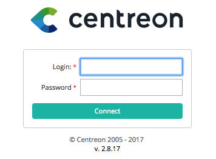

Login¶
Para conectar a sua interface do Centreon web, acesse a URL: http://ENDEREÇO_IP/centreon
Note
Substitua ENDEREÇO_IP pelo o endereço de IP ou FQDN de seu servidor Centreon web.
Informe seu nome de usuário e senha associados e clique no botão Connect:
Você esta agora conectado a interface Centreon web.